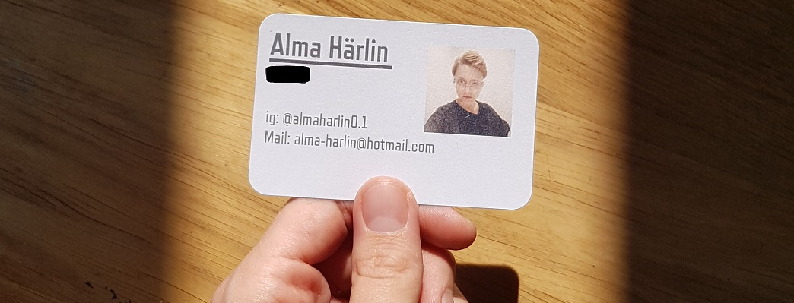

"Experiments blurring boundaries can lead to the future that we hope"
//Taiho Shin
ME
Im a person who likes to help others to solve problems in a beautifull way in this ever changeing world full of entropy.
STRENGTH & INTERESTS
Solution-focused | Helpful | Organized & methodical
Painting & Art | Coffee | Programming | Travel & culture | Games
LANGUAGES
Swedish(Fluent) *****
English ****
Japanese **
OTHER
EM and B driver's license
Exhibitions
Tingsryd | Tokyo | Lidköping | Växjö
Facebook | Link to facebook
Email | alma-harlin@hotmail.com
Phone | (+46)739-71 43 37
GitHub | Link to GitHub
LinkedIn | Link to LinkedIn
